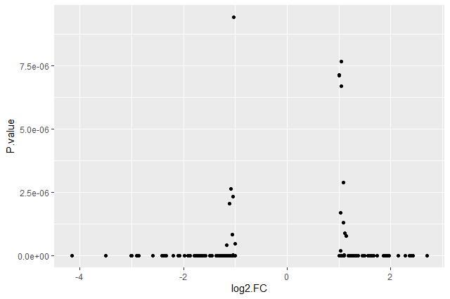
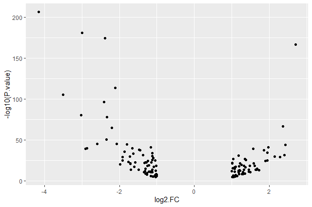
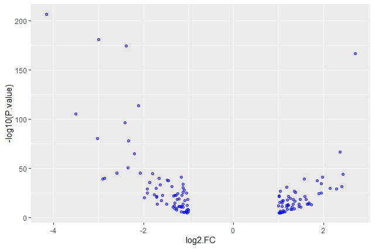
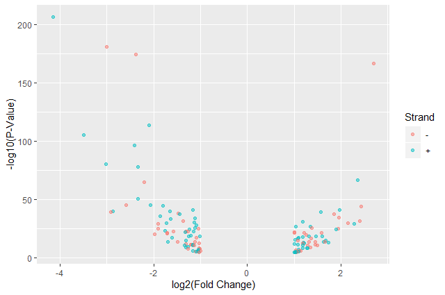

RNA Seq Counts to Viz in R
Under Development!
This tutorial is not in its final state. The content may change a lot in the next months. Because of this status, it is also not listed in the topic pages.
 Bérénice Batut
Bérénice Batut Fotis E. Psomopoulos
Fotis E. Psomopoulos Toby Hodges
Toby HodgesOverview
question Questionsobjectives Objectives
How can I manipulate data using R in Galaxy?
How can I create neat visualizations of the data?
How do I get started with tabular data from Galaxy in R?
requirements Requirements
Be able to load and explore the shape and contents of a tabular dataset using base R functions.
Understand factors and how they can be used to store and work with categorical data.
Apply common
dplyrfunctions to manipulate data in R.Employ the ‘pipe’ operator to link together a sequence of functions.
Describe the role of data, aesthetics, geoms, and layers in
ggplotfunctions.Customize plot scales, titles, subtitles, themes, fonts, layout, and orientation.
- Introduction to Galaxy Analyses
- Sequence analysis
- Quality Control: slides slides - tutorial hands-on
- Mapping: slides slides - tutorial hands-on
- User Interface and Features
- Introduction to Galaxy Analyses
- Transcriptomics
- Reference-based RNA-Seq data analysis: tutorial hands-on
time Time estimation: 3 hours
Introduction
comment Comment
This tutorial is significantly based on the Carpentries “Intro to R and RStudio for Genomics” lesson
With RNA-Seq data analyis, we generated tables containing list of DE genes, their expression, some statistics, etc. We can manipulate these tables using Galaxy, as we saw in some tutorials, e.g. “Reference-based RNA-Seq data analysis”, and create some visualisations.
Sometimes we want to have some customizations on visualization, some complex table manipulations or some statistical analysis. If we can not find a Galaxy tools for that or the right parameters, we may need to use programming languages as R or Python.
R is one of the most widely-used and powerful programming languages in bioinformatics. R especially shines where a variety of statistical tools are required (e.g. RNA-Seq, population genomics, etc.) and in the generation of publication-quality graphs and figures. Rather than get into an R vs. Python debate (both are useful), keep in mind that many of the concepts you will learn apply to Python and other programming languages. At more than 20 years old, R is fairly mature and growing in popularity. However, programming isn’t a popularity contest. Here are key advantages of analyzing data in R:
-
R is free and open source
R is free - an advantage if you are at an institution where you have to pay for your own MATLAB or SAS license. It is important to your colleagues in parts of the world where expensive software is inaccessible.
Open source means that you can see and reuse the source. Thanks to that, R is actively developed by a community (see r-project.org), and there are regular updates.
-
R is widely used
Ok, maybe programming is a popularity contest. Because, R is used in many areas (not just bioinformatics), you are more likely to find help online when you need it. Chances are, almost any error message you run into, someone else has already experienced.
-
R is powerful
R runs on multiple platforms (Windows/MacOS/Linux). It can work with much larger datasets than popular spreadsheet programs like Microsoft Excel, and because of its scripting capabilities is far more reproducible. Also, there are thousands of available software packages for science, including genomics and other areas of life science.
comment On the content of the tutorial
We believe that every learner can achieve competency with R. You have reached competency when you find that you are able to use R to handle common analysis challenges in a reasonable amount of time (which includes time needed to look at learning materials, search for answers online, and ask colleagues for help). As you spend more time using R (there is no substitute for regular use and practice) you will find yourself gaining competency and even expertise. The more familiar you get, the more complex the analyses you will be able to carry out, with less frustration, and in less time - the fantastic world of R awaits you!
Nobody wants to learn how to use R. People want to learn how to use R to answer their own research questions! Ok, maybe some folks learn R for R’s sake, but these lessons assume that you want to start analyzing genomic data as soon as possible. Given this, there are many valuable pieces of information about R that we simply won’t have time to cover. Hopefully, we will clear the hurdle of giving you just enough knowledge to be dangerous, which can be a high bar in R! We suggest you look into the additional learning materials in the box below.
Some R skills we will not cover in these lessons
- How to create and work with R matrices and R lists
- How to create and work with loops and conditional statements, and the “apply” of functions (which are super useful, read more here)
- How to do basic string manipulations (e.g. finding patterns in text using grep, replacing text)
- How to plot using the default R graphic tools (we will cover plot creation, but will do so using the popular plotting package
ggplot2)- How to use advanced R statistical functions
tip Tip: Where to learn more
The following are good resources for learning more about R. Some of them can be quite technical, but if you are a regular R user you may ultimately need this technical knowledge.
- R for Beginners, by Emmanuel Paradis: a great starting point
- The R Manuals, by the R project people
- R contributed documentation, also linked to the R project, with materials available in several languages
- R for Data Science: a wonderful collection by noted R educators and developers Garrett Grolemund and Hadley Wickham
- Practical Data Science for Stats: not exclusively about R usage, but a nice collection of pre-prints on data science and applications for R
- Programming in R Software Carpentry lesson: several Software Carpentry lessons in R to choose from
- Data Camp Introduction to R: a fun online learning platform for Data Science, including R.
In this tutorial, we will take the list of DE genes extracted from DESEq2’s output that we generated in the “Reference-based RNA-Seq data analysis” tutorial, manipulate it and create some visualizations.
Agenda
In this tutorial, we will cover:
Before diving in the tutorial, we need to open RStudio. If you do not know how or never interacted with RStudio, please follow the dedicated tutorial.
hands_on Hands-on: Open RStudio
Start RStudio in Galaxy
tip Tip: Launch RStudio in Galaxy
- Open the Rstudio tool tool by clicking here
- Click Execute
tip Tip: Launch RStudio Cloud if not available on Galaxy
If RStudio is not available on the Galaxy instance:
- Register for RStudio Cloud or log in with your Github or Google account
- Create a new project
Get familiar with the annotated DE genes table in R
A substantial amount of the data we work with in science is tabular data, i.e. data arranged in rows and columns - also known as spreadsheets.
comment Few principles when working with data
We want to remind you of a few principles before we work with our first set of example data:
Keep raw data separate from analyzed data
This is principle number one, because if you can’t tell which files are the original raw data, you risk making some serious mistakes (e.g. drawing conclusion from data which have been manipulated in some unknown way).
When you work with data in R, you are not changing the original file which you loaded the data from. This is different than (for example) working with a spreadsheet program where changing the value of the cell leaves you one “save”-click away from overwriting the original file. You have to purposely use a writing function (e.g.
write.csv()) to save data loaded into R. In that case, be sure to save the manipulated data into a new file. More on this later in the lesson.Keep spreadsheet data Tidy
The simplest principle of Tidy data is that we have one row in our spreadsheet for each observation or sample, and one column for every variable that we measure or report on. As simple as this sounds, it’s very easily violated. Most data scientists agree that significant amounts of their time is spent tidying data for analysis.
Trust but verify
Finally, while you don’t need to be paranoid about data, you should have a plan for how you will prepare it for analysis. This a focus of this lesson. You probably already have a lot of intuition, expectations, assumptions about your data - the range of values you expect, how many values should have been recorded, etc. Of course, as the data get larger our human ability to keep track will start to fail (and yes, it can fail for small data sets too). R will help you to examine your data so that you can have greater confidence in your analysis, and its reproducibility.
Import tabular data into R
There are several ways to import data into R. For our purpose here, we will focus on using the tools every R installation comes with (so called “base” R) to import a comma-delimited file containing the results of our variant calling workflow. We will need to load the sheet using a function called read.csv().
question Questions: Review the arguments of the
read.csv()functionBefore using the
read.csv()function, use R’s help feature to answer the following questions.tip Getting help in R
Entering
?before the function name and then running that line will bring up the help documentation. Also, when reading this particular help be careful to pay attention to theread.csvexpression under the Usage heading. Other answers will be in the Arguments heading.
- What is the default parameter for
headerin theread.csv()function?- What argument would you have to change to read a file that was delimited by semicolons (
;) rather than commas?- What argument would you have to change to read file in which numbers used commas for decimal separation (i.e. 1,00)?
- What argument would you have to change to read in only the first 10,000 rows of a very large file?
solution Solution
- The
read.csv()function has the argumentheaderset toTRUEby default, this means the function always assumes the first row is header information, (i.e. column names)- The
read.csv()function has the argument ‘sep’ set to “,”. This means the function assumes commas are used as delimiters, as you would expect. Changing this parameter (e.g.sep=";") would now interpret semicolons as delimiters.- Although it is not listed in the
read.csv()usage,read.csv()is a “version” of the functionread.table()and accepts all its arguments. If you setdec=","you could change the decimal operator. We’d probably assume the delimiter is some other character.- You can set
nrowto a numeric value (e.g.nrow=10000) to choose how many rows of a file you read in. This may be useful for very large files where not all the data is needed to test some data cleaning steps you are applying.Hopefully, this exercise gets you thinking about using the provided help documentation in R. There are many arguments that exist, but which we wont have time to cover. Look here to get familiar with functions you use frequently, you may be surprised at what you find they can do.
Now, let’s read the file with the annotated differentially expressed genes that was produced in the “Reference-based RNA-Seq data analysis” tutorial.
hands_on Hands-on: Read the annotated differentially expressed genes
- Create a new script (if needed)
Read the tabular file in an object called
annotatedDEgenes. We can import directly by URL:## read in a CSV file and save it as 'annotatedDEgenes' annotatedDEgenes <- read.csv("https://zenodo.org/record/3477564/files/annotatedDEgenes.tabular")The first argument to pass to our
read.csv()function is the file path for our data. The file path must be in quotes and now is a good time to remember to use tab autocompletion. If you use tab autocompletion you avoid typos and errors in file paths. Use it!- Inspect the Environment panel
tip Upload files from a Galaxy history to RStudio
Rstudio in Galaxy provides some special functions to import and export from your history.
gx_get(2) # will import dataset number 2 from your history
In the Environment panel, you should have the annotatedDEgenes object, listed as 130 obs. (observations/rows) of 1 variable (column) - so the command worked (sort of)!
hands_on Hands-on: Inspect the annotatedDEgenes file
- Double-click on the name of the object in the Environment panel
It will open a view of the data in a new tab on the top-left panel.
As you can see, there is a problem with how the data has been loaded. The table should contain 130 observations of 13 variables.
question Question: Identify the issue with data
- What is wrong?
- How should you adjust the parameters for
read.csv()in order to produce the intended output?solution Solution
- The data file was not delimited by commas (
,) which is the default expected delimiter forread.csv(). Instead it seems like it’s delimited by “white space”, i.e. spaces and/or tabs.- We need to set the correct delimiter using the parameter
sep. Given that we are not sure what the actual delimiter is, we could try both options, i.e.sep=" "(space) andsep="\t"(tab).
hands_on Hands-on: Read correctly tabular file
Read the file given it’s a tabular file
annotatedDEgenes <- read.csv("https://zenodo.org/record/3477564/files/annotatedDEgenes.tabular", sep = "\t")- Inspect the object in the Environment panel
Open the object
You should have now a nice table
Check the column names
> colnames(annotatedDEgenes) [1] "GeneID" "Base.mean" "log2.FC." "StdErr" "Wald.Stats" [6] "P.value" "P.adj" "Chromosome" "Start" "End" [11] "Strand" "Feature" "Gene.name"
Congratulations! You’ve successfully loaded your data into RStudio!
Summarize and determine the structure of a data frame
Tabular data are stored in R using data frame. A data frame could also be thought of as a collection of vectors, all of which have the same length.
hands_on Hands-on: Learn more about our data frame
Get summary statistics of
annotatedDEgenesusingsummaryfunction## get summary statistics on a data frame > summary(annotatedDEgenes) GeneID Base.mean log2.FC. StdErr Wald.Stats FBgn0000071: 1 Min. : 19.15 Min. :-4.1485 Min. :0.08433 Min. :-30.741 FBgn0000079: 1 1st Qu.: 100.29 1st Qu.:-1.3363 1st Qu.:0.12849 1st Qu.:-10.005 FBgn0000116: 1 Median : 237.99 Median :-1.0272 Median :0.16370 Median : -4.982 FBgn0000406: 1 Mean : 1911.27 Mean :-0.2074 Mean :0.16432 Mean : -1.901 FBgn0000567: 1 3rd Qu.: 948.66 3rd Qu.: 1.2203 3rd Qu.:0.19866 3rd Qu.: 7.692 FBgn0001137: 1 Max. :65114.84 Max. : 2.6999 Max. :0.23292 Max. : 27.566 (Other) :124 P.value P.adj Seqname Start End Strand Min. :0.000e+00 Min. :0.000e+00 chr2L:24 Min. : 127448 Min. : 140340 -:58 1st Qu.:0.000e+00 1st Qu.:0.000e+00 chr2R:31 1st Qu.: 7277516 1st Qu.: 7279063 +:72 Median :0.000e+00 Median :0.000e+00 chr3L:27 Median :13161546 Median :13166253 Mean :4.201e-07 Mean :9.321e-06 chr3R:32 Mean :13436843 Mean :13446444 3rd Qu.:7.000e-12 3rd Qu.:3.700e-10 chrX :16 3rd Qu.:19250429 3rd Qu.:19284637 Max. :9.418e-06 Max. :1.951e-04 Max. :31196915 Max. :31203722 Feature Gene.Name lincRNA : 3 Ama : 1 protein_coding:126 Amy-p : 1 pseudogene : 1 Ant2 : 1 Argk : 1 BM-40-SPARC: 1 bou : 1 (Other) :124Get the structure of
annotatedDEgenesusingstrfunction## get the structure of a data frame > str(annotatedDEgenes) 'data.frame': 130 obs. of 13 variables: $ GeneID : Factor w/ 130 levels "FBgn0000071",..: 87 12 28 26 31 96 65 62 125 1 ... $ Base.mean : num 1087 6410 65115 2192 5430 ... $ log2.FC. : num -4.15 -3 -2.38 2.7 -2.11 ... $ StdErr : num 0.1349 0.1043 0.0843 0.0979 0.0925 ... $ Wald.Stats: num -30.7 -28.7 -28.2 27.6 -22.7 ... $ P.value : num 1.62e-207 9.42e-182 2.85e-175 2.85e-167 1.57e-114 ... $ P.adj : num 1.39e-203 4.04e-178 8.15e-172 6.10e-164 2.70e-111 ... $ Seqname : Factor w/ 5 levels "chr2L","chr2R",..: 4 5 4 5 3 4 2 2 3 4 ... $ Start : int 24141394 10780892 26869237 10778953 13846053 31196915 24945138 22550093 820758 > 6762592 ... $ End : int 24147490 10786958 26871995 10786907 13860001 31203722 24946636 22552113 821512 > 6765261 ... $ Strand : Factor w/ 2 levels "-","+": 2 1 1 1 2 2 2 2 2 2 ... $ Feature : Factor w/ 3 levels "lincRNA","protein_coding",..: 2 2 2 2 2 2 2 2 1 2 ... $ Gene.Name : Factor w/ 130 levels "Ama","Amy-p",..: 88 113 5 3 84 26 41 53 69 1 ...
Ok, thats a lot to unpack! Some things to notice:
- the object type
data.frameis displayed in the first row along with its dimensions, in this case 130 observations (rows) and 13 variables (columns) - Each variable (column) has a name (e.g.
GeneID). This is followed by the object mode (e.g.factor,int,num, etc.). Notice that before each variable name there is a$- this will be important later.
So from both summary and str, we know that our data frame had 13 variables that summarize the data.
-
Base.mean,log2.FC.andP.valuevariables (and several others) are numerical dataWe get summary statistics on the min and max values for these columns, as well as mean, median, and interquartile ranges
-
Many of the other variables (e.g.
Strand) are treated as categorical dataThis type has special treatment in R - more on this in a bit. The most frequent 6 different categories and the number of times they appear (e.g. the
Strandcalled-appeared 58 times) are displayed. Another example is theprotein_codingvalue forFeaturewhich appeared in 126 observations.
Factors
Factors, the final major data structure we will introduce, can be thought of as vectors which are specialized for categorical data. Given R’s specialization for statistics, this make sense since categorial and continuous variables usually have different treatments. Sometimes you may want to have data treated as a factor, but in other cases, this may be undesirable.
Since some of the data in our data frame are factors, lets see how factors work.
hands_on Hands-on: Inspect a factor object
Extract the
featurecolumn to a new object calledfeature## extract the "feature" column to a new object feature <- annotatedDEgenes$FeatureInspect the first few items in our using
headfunction> head(feature) [1] protein_coding protein_coding protein_coding protein_coding [5] protein_coding protein_coding Levels: lincRNA protein_coding pseudogene
What we get back are the items in our factor, and also something called “Levels”. Levels are the different categories contained in a factor. By default, R will organize the levels in a factor in alphabetical order. So the first level in this factor is “lincRNA”.
hands_on Hands-on: Get the structure of a factor object
Get the structure of the
featureobject> str(feature) Factor w/ 3 levels "lincRNA","protein_coding",..: 2 2 2 2 2 2 2 2 1 2 ...
For the sake of efficiency, R stores the content of a factor as a vector of integers, which an integer is assigned to each of the possible levels. Recall levels are assigned in alphabetical order. In this case, the first item in our “Feature” object is “protein_coding”, which happens to be the 2nd level of our factor, ordered alphabeticaly. The 9th item in the list is “lincRNA”, which is the 1st level of our factor.
One of the most common uses for factors is to plot categorical values. For example, suppose we want to know how many of our differentially expressed genes correspond to different features.
hands_on Hands-on: Plot a factor object
Plot the number of levels in the
featureobject usingplotfunctionplot(feature)

This isn’t a particularly pretty example of a plot. We’ll be learning much more about creating nice, publication-quality graphics later.
Subset a data frame
Now we would like to know how to get specific values from data frames, and where necessary, change the mode of a column of values.
The first thing to remember is that a data frame is two-dimensional (rows and columns). Therefore, to select a specific value we will once again use [] (bracket) notation, but we will specify more than one value (except in some cases where we are taking a range).
question Subsetting a data frame
Run the following indices and functions to figure out what they return
annotatedDEgenes[1, 1]annotatedDEgenes[2, 4]annotatedDEgenes[130, 13]annotatedDEgenes[2, ]annotatedDEgenes[-1, ]annotatedDEgenes[1:4, 1]annotatedDEgenes[1:10, c("Feature", "Gene.Name")]annotatedDEgenes[, c("Gene.Name")]head(annotatedDEgenes)tail(annotatedDEgenes)annotatedDEgenes$GeneIDannotatedDEgenes[annotatedDEgenes$Feature == "pseudogene", ]solution Solution
annotatedDEgenes[1, 1]> annotatedDEgenes[1,1] [1] FBgn0039155 130 Levels: FBgn0000071 FBgn0000079 FBgn0000116 FBgn0000406 FBgn0000567 FBgn0001137 ... FBgn0267635
annotatedDEgenes[2, 4]> annotatedDEgenes[2, 4] [1] 0.1043451
annotatedDEgenes[130, 13]> annotatedDEgenes[130,13] [1] CG10440 130 Levels: Ama Amy-p Ant2 Argk BM-40-SPARC bou bves CAHbeta cbt CG10063 CG10365 CG10440 ... zye
annotatedDEgenes[2, ]> annotatedDEgenes[2, ] GeneID Base.mean log2.FC. StdErr Wald.Stats P.value P.adj Seqname Start 2 FBgn0003360 6409.577 -2.999777 0.1043451 -28.74863 9.422382e-182 4.040788e-178 chrX 10780892 End Strand Feature Gene.Name 2 10786958 - protein_coding sesB
annotatedDEgenes[-1, ]> annotatedDEgenes[-1, ] GeneID Base.mean log2.FC. StdErr Wald.Stats P.value P.adj Seqname 2 FBgn0003360 6409.57713 -2.999777 0.10434506 -28.748628 9.422382e-182 4.040788e-178 chrX 3 FBgn0026562 65114.84056 -2.380164 0.08432692 -28.225437 2.850473e-175 8.149503e-172 chr3R 4 FBgn0025111 2192.32237 2.699939 0.09794457 27.565988 2.846764e-167 6.104174e-164 chrX 5 FBgn0029167 5430.06728 -2.105062 0.09254660 -22.745964 1.573283e-114 2.698810e-111 chr3L 6 FBgn0039827 390.90178 -3.503014 0.16002962 -21.889786 3.250384e-106 4.646424e-103 chr3R 7 FBgn0035085 928.26381 -2.414074 0.11518516 -20.958204 1.579343e-97 1.935147e-94 chr2R 8 FBgn0034736 330.38302 -3.018179 0.15815418 -19.083774 3.444661e-81 3.693107e-78 chr2R 9 FBgn0264475 955.45445 -2.334486 0.12423003 -18.791643 8.840041e-79 8.424559e-76 chr3L 10 FBgn0000071 468.05793 2.360017 0.13564397 17.398615 8.452137e-68 7.249398e-65 chr3R # ... with 120 more rows Start End Strand Feature Gene.Name 2 10780892 10786958 - protein_coding sesB 3 26869237 26871995 - protein_coding BM-40-SPARC 4 10778953 10786907 - protein_coding Ant2 5 13846053 13860001 + protein_coding Hml 6 31196915 31203722 + protein_coding CG1544 7 24945138 24946636 + protein_coding CG3770 8 22550093 22552113 + protein_coding CG6018 9 820758 821512 + lincRNA CR43883 10 6762592 6765261 + protein_coding Ama # ... with 120 more rows
annotatedDEgenes[1:4,1]> annotatedDEgenes[1:4,1] [1] FBgn0039155 FBgn0003360 FBgn0026562 FBgn0025111 130 Levels: FBgn0000071 FBgn0000079 FBgn0000116 FBgn0000406 FBgn0000567 FBgn0001137 ... FBgn0267635annotatedDEgenes[1:10,c(“Feature”,”Gene.Name”)]
> annotatedDEgenes[1:10,c("Feature","Gene.Name")] Feature Gene.Name 1 protein_coding Kal1 2 protein_coding sesB 3 protein_coding BM-40-SPARC 4 protein_coding Ant2 5 protein_coding Hml 6 protein_coding CG1544 7 protein_coding CG3770 8 protein_coding CG6018 9 lincRNA CR43883 10 protein_coding Ama
annotatedDEgenes[,c("Gene.Name")]> annotatedDEgenes[,c("Gene.Name")] [1] Kal1 sesB BM-40-SPARC Ant2 Hml CG1544 CG3770 [8] CG6018 CR43883 Ama CG3168 CG15695 CG8500 Rgk1 [15] Sesn CG9119 Sema-2a l(1)G0196 lectin-28C Sox100B Hsp27 [22] CG34330 Ugt58Fa Src64B Tequila CG32407 LpR2 CG12290 [29] ps CG8157 nemy bves CG8468 CR43855 CG13315 [36] CG1124 Reg-2 CG5261 Treh Hsp23 Gale PPO1 [43] Picot RpS24 CG14946 CG10365 NimC4 CG42694 CG33307 [50] CG6006 grk CG42369 GILT1 CG5001 Hsp26 MtnA [57] CG6330 l(3)neo38 Cyt-b5-r CG12116 PPO2 zye tnc [64] CG14257 GstE2 olf413 CG31642 Nxf3 CG8292 CG5397 [71] Mctp CG7777 CG4019 ChLD3 Argk bou Mct1 [78] CG9416 CG12512 CG32625 Npc2b CG30463 Eip74EF CAHbeta [85] CG14326 Cyp6w1 CG3457 wdp cbt CrebA Cyp4d20 [92] CR45973 Sr-CIV SPH93 Cyp9h1 sug CG14516 Ggamma30A [99] CG4297 CG9503 CG10063 CG8501 CG43336 stet CG8852 [106] CG15080 Amy-p sn CG9989 mlt CG2444 CG17189 [113] RhoGAP1A CG13743 TwdlU Galphaf CG32335 E(spl)m3-HLH CG16749 [120] CG34434 CG43799 Pde6 Sr-CIII NimC2 CG5895 SP1173 [127] CG1311 CG14856 CG6356 CG10440 130 Levels: Ama Amy-p Ant2 Argk BM-40-SPARC bou bves CAHbeta cbt CG10063 CG10365 CG10440 ... zye
head(annotatedDEgenes)> head(annotatedDEgenes) GeneID Base.mean log2.FC. StdErr Wald.Stats P.value P.adj Seqname Start 1 FBgn0039155 1086.9743 -4.148450 0.13494887 -30.74090 1.617921e-207 1.387691e-203 chr3R 24141394 2 FBgn0003360 6409.5771 -2.999777 0.10434506 -28.74863 9.422382e-182 4.040788e-178 chrX 10780892 3 FBgn0026562 65114.8406 -2.380164 0.08432692 -28.22544 2.850473e-175 8.149503e-172 chr3R 26869237 4 FBgn0025111 2192.3224 2.699939 0.09794457 27.56599 2.846764e-167 6.104174e-164 chrX 10778953 5 FBgn0029167 5430.0673 -2.105062 0.09254660 -22.74596 1.573283e-114 2.698810e-111 chr3L 13846053 6 FBgn0039827 390.9018 -3.503014 0.16002962 -21.88979 3.250384e-106 4.646424e-103 chr3R 31196915 End Strand Feature Gene.Name 1 24147490 + protein_coding Kal1 2 10786958 - protein_coding sesB 3 26871995 - protein_coding BM-40-SPARC 4 10786907 - protein_coding Ant2 5 13860001 + protein_coding Hml 6 31203722 + protein_coding CG1544
tail(annotatedDEgenes)> tail(annotatedDEgenes) GeneID Base.mean log2.FC. StdErr Wald.Stats P.value P.adj Seqname Start 125 FBgn0036560 27.71424 1.089000 0.2327527 4.678786 2.885785e-06 6.671531e-05 chr3L 16035484 126 FBgn0035710 26.16177 1.048979 0.2329221 4.503559 6.682472e-06 1.436480e-04 chr3L 6689326 127 FBgn0035523 70.99820 1.004819 0.2237625 4.490560 7.103600e-06 1.523189e-04 chr3L 4277961 128 FBgn0038261 44.27058 1.006264 0.2241243 4.489756 7.130482e-06 1.525141e-04 chr3R 14798985 129 FBgn0039178 23.55006 1.040917 0.2326264 4.474631 7.654326e-06 1.629061e-04 chr3R 24283954 130 FBgn0034636 24.77052 -1.028531 0.2321678 -4.430119 9.418101e-06 1.951185e-04 chr2R 21560245 End Strand Feature Gene.Name 125 16037227 + protein_coding CG5895 126 6703521 - protein_coding SP1173 127 4281585 + protein_coding CG1311 128 14801163 + protein_coding CG14856 129 24288617 + protein_coding CG6356 130 21576035 - protein_coding CG10440
annotatedDEgenes$GeneID> annotatedDEgenes$GeneID [1] FBgn0039155 FBgn0003360 FBgn0026562 FBgn0025111 FBgn0029167 FBgn0039827 FBgn0035085 FBgn0034736 [9] FBgn0264475 FBgn0000071 FBgn0029896 FBgn0038832 FBgn0037754 FBgn0264753 FBgn0034897 FBgn0035189 [17] FBgn0011260 FBgn0027279 FBgn0040099 FBgn0024288 FBgn0001226 FBgn0085359 FBgn0040091 FBgn0262733 [25] FBgn0023479 FBgn0052407 FBgn0051092 FBgn0039419 FBgn0261552 FBgn0034010 FBgn0261673 FBgn0031150 [33] FBgn0033913 FBgn0264437 FBgn0040827 FBgn0037290 FBgn0016715 FBgn0031912 FBgn0003748 FBgn0001224 [41] FBgn0035147 FBgn0261362 FBgn0024315 FBgn0261596 FBgn0032405 FBgn0039109 FBgn0260011 FBgn0261584 [49] FBgn0053307 FBgn0063649 FBgn0001137 FBgn0259715 FBgn0038149 FBgn0031322 FBgn0001225 FBgn0002868 [57] FBgn0039464 FBgn0265276 FBgn0000406 FBgn0030041 FBgn0033367 FBgn0036985 FBgn0039257 FBgn0039479 [65] FBgn0063498 FBgn0037153 FBgn0051642 FBgn0263232 FBgn0032004 FBgn0031327 FBgn0034389 FBgn0033635 [73] FBgn0034885 FBgn0032598 FBgn0000116 FBgn0261284 FBgn0023549 FBgn0034438 FBgn0031703 FBgn0052625 [81] FBgn0038198 FBgn0050463 FBgn0000567 FBgn0037646 FBgn0038528 FBgn0033065 FBgn0024984 FBgn0034718 [89] FBgn0043364 FBgn0004396 FBgn0035344 FBgn0267635 FBgn0031547 FBgn0032638 FBgn0033775 FBgn0033782 [97] FBgn0039640 FBgn0267252 FBgn0031258 FBgn0030598 FBgn0035727 FBgn0033724 FBgn0263041 FBgn0020248 [105] FBgn0031548 FBgn0034391 FBgn0000079 FBgn0003447 FBgn0039593 FBgn0265512 FBgn0030326 FBgn0039485 [113] FBgn0025836 FBgn0033368 FBgn0037223 FBgn0010223 FBgn0063667 FBgn0002609 FBgn0037678 FBgn0250904 [121] FBgn0264343 FBgn0038237 FBgn0020376 FBgn0028939 FBgn0036560 FBgn0035710 FBgn0035523 FBgn0038261 [129] FBgn0039178 FBgn0034636 130 Levels: FBgn0000071 FBgn0000079 FBgn0000116 FBgn0000406 FBgn0000567 FBgn0001137 ... FBgn0267635
annotatedDEgenes[annotatedDEgenes$Feature == "pseudogene",]> annotatedDEgenes[annotatedDEgenes$Feature == "pseudogene",] GeneID Base.mean log2.FC. StdErr Wald.Stats P.value P.adj Seqname Start 115 FBgn0037223 37.00783 -1.161706 0.2297393 -5.056627 4.267378e-07 1.192225e-05 chr3R 4243605 End Strand Feature Gene.Name 115 4245511 + pseudogene TwdlU
The subsetting notation is very similar to what we learned for vectors. The key differences include:
- 2 values, separated by commas:
data.frame[row, column] - Use of a colon between the numbers (
start:stop, inclusive) for a continuous range of numbers - Passing a vector using
c()for a non continuous set of numbers, pass a vector - Index using the name of a column(s) by passing them as vectors using
c()
hands_on Hands-on: Create a new data frame by subsetting an existing one
Create a new data frame containing only observations from the “+” strand
# create a new data frame containing only observations from the "+" strand annotatedDEgenes_plusStrand <- annotatedDEgenes[annotatedDEgenes$Strand == "+",]Check the dimension of the new data frame
# check the dimension of the data frame > dim(annotatedDEgenes_plusStrand) [1] 72 13Get a summary of the data frame
# get a summary of the data frame > summary(annotatedDEgenes_plusStrand) GeneID Base.mean log2.FC. StdErr Wald.Stats FBgn0000071: 1 Min. : 23.55 Min. :-4.1485 Min. :0.08603 Min. :-30.741 FBgn0001224: 1 1st Qu.: 96.04 1st Qu.:-1.3664 1st Qu.:0.12523 1st Qu.:-11.223 FBgn0001226: 1 Median : 275.91 Median :-1.0739 Median :0.15648 Median : -5.290 FBgn0002609: 1 Mean : 1365.34 Mean :-0.3133 Mean :0.16087 Mean : -2.729 FBgn0003447: 1 3rd Qu.: 988.33 3rd Qu.: 1.1856 3rd Qu.:0.19743 3rd Qu.: 7.592 FBgn0003748: 1 Max. :28915.90 Max. : 2.3600 Max. :0.23275 Max. : 17.399 (Other) :66 P.value P.adj Seqname Start End Strand Min. :0.000e+00 Min. :0.000e+00 chr2L:12 Min. : 127448 Min. : 140340 -: 0 1st Qu.:0.000e+00 1st Qu.:0.000e+00 chr2R:14 1st Qu.: 7377082 1st Qu.: 7379907 +:72 Median :0.000e+00 Median :0.000e+00 chr3L:15 Median :14068548 Median :14070644 Mean :4.556e-07 Mean :1.013e-05 chr3R:24 Mean :14422245 Mean :14431849 3rd Qu.:6.000e-12 3rd Qu.:3.200e-10 chrX : 7 3rd Qu.:21339535 3rd Qu.:21378634 Max. :7.654e-06 Max. :1.629e-04 Max. :31196915 Max. :31203722 Feature Gene.Name lincRNA : 2 Ama : 1 protein_coding:69 bou : 1 pseudogene : 1 bves : 1 CAHbeta: 1 CG10365: 1 CG1124 : 1 (Other):66
Change type of columns
Sometimes, it is possible that R will misinterpret the type of data represented in a data frame, or store that data in a mode which prevents you from operating on the data the way you wish. For example, a long list of gene names isn’t usually thought of as a categorical variable, the way that your experimental condition (e.g. control, treatment) might be. More importantly, some R packages you use to analyze your data may expect characters as input, not factors. At other times (such as plotting or some statistical analyses) a factor may be more appropriate. Ultimately, you should know how to change the mode of an object.
First, its very important to recognize that coercion happens in R all the time. This can be a good thing when R gets it right, or a bad thing when the result is not what you expect.
hands_on Hands-on: Format gene names
Check the structure of the
Gene.namecolumn> str(annotatedDEgenes$Gene.name) Factor w/ 130 levels "Ama","Amy-p",..: 88 113 5 3 84 26 41 53 69 1 ...Try to coerce the column into numeric
> as.numeric(annotatedDEgenes$Gene.name) [1] 88 113 5 3 84 26 41 53 69 1 33 27 60 109 114 63 112 [18] 89 91 116 87 38 128 121 124 35 92 15 107 57 97 7 59 68 [35] 18 13 108 49 126 85 78 105 104 111 24 11 99 44 37 52 82 ...Strangely, it works! Almost. Instead of giving an error message, R returns numeric values, which in this case are the integers assigned to the levels in this factor. This kind of behavior can lead to hard-to-find bugs, for example when we do have numbers in a factor, and we get numbers from a coercion. If we don’t look carefully, we may not notice a problem.
Coerce the column into character (which makes sense for gene names)
annotatedDEgenes$Gene.name = as.character(annotatedDEgenes$Gene.name)
R will sometimes coerce without you asking for it (implicit coercion). You can explicitly change it (explicit coercion).
tip Avoiding needless coercion
One way to avoid needless coercion when importing a data frame using functions such as
read.csv()is to set the argumentStringsAsFactorstoFALSE. By default, this argument isTRUE. Setting it toFALSEwill treat any non-numeric column to a character type. Going through theread.csv()documentation, you will also see you can explicitly type your columns using thecolClassesargument. Other R packages (such as the Tidyversereadr) don’t have this particular conversion issue, but many packages will still try to guess a data type.
Inspect a numerical column using math, sorting, renaming
Here are a few operations that don’t need much explanation, but which are good to know. There are lots of arithmetic functions you may want to apply to your data frame. For example, you can use functions like mean(), min(), max() on an individual column.
Let’s look at the Base.mean column, i.e. the mean of normalized counts of all samples, normalizing for sequencing depth and library composition.
hands_on Hands-on: Inspect the
Base.meancolumn and sort
Get the maximum value of
Base.meancolumnmax(annotatedDEgenes$Base.mean) [1] 65114.84Sort the data frame by values in the
Base.meancolumn> sorted_by_BaseMean <- annotatedDEgenes[order(annotatedDEgenes$Base.mean), ] > head(sorted_by_BaseMean$Base.mean) [1] 19.15076 23.55006 24.77052 26.16177 27.71424 31.58769question Changing the order
The
order()function lists values in increasing order by default. Look at the documentation for this function and changesorted_by_BaseMeanto start with differentially expressed means with the greatest base mean.solution Solution
> sorted_by_BaseMean <- annotatedDEgenes[order(annotatedDEgenes$Base.mean, decreasing = TRUE), ] > head(sorted_by_BaseMean$Base.mean) [1] 65114.841 28915.903 24584.306 22435.886 8903.630 8573.815Coerce the column into character (which makes sense for gene names)
annotatedDEgenes$Gene.name = as.character(annotatedDEgenes$Gene.name)
Save the data frame to a file
We can save data frame as table in our Galaxy history to use it as input for other tools.
hands_on Hands-on: Save data frame in Galaxy history
Save the
annotatedDEgenes_plusStrandobject to a.csvfile using thewrite.csv()function:> write.csv(annotatedDEgenes_plusStrand, file = "annotatedDEgenes_plusStrand.csv")TODO: Description on how to save a file from RStudio to Galaxy
The write.csv() function has some additional arguments listed in the help, but at a minimum you need to tell it what data frame to write to file, and give a path to a file name in quotes (if you only provide a file name, the file will be written in the current working directory).
Aggregate and Analyze with dplyr
Selecting columns and rows using bracket subsetting is handy, but it can be cumbersome and difficult to read, especially for complicated operations.
The functions we’ve been using so far, like str(), come built into R. By using packages, we can access more functions. Here, we would like to use dplyr package provides a number of very useful functions for manipulating data frames in a way that will reduce repetition, reduce the probability of making errors, and probably even save you some typing. As an added bonus, you might even find the dplyr grammar easier to read.
comment What is dplyr?
The package
dplyris a fairly new (2014) package that tries to provide easy tools for the most common data manipulation tasks. It is built to work directly with data frames. The thinking behind it was largely inspired by the packageplyrwhich has been in use for some time but suffered from being slow in some cases.dplyraddresses this by porting much of the computation to C++. An additional feature is the ability to work with data stored directly in an external database. The benefits of doing this are that the data can be managed natively in a relational database, queries can be conducted on that database, and only the results of the query returned.This addresses a common problem with R in that all operations are conducted in memory and thus the amount of data you can work with is limited by available memory. The database connections essentially remove that limitation in that you can have a database of many 100s GB, conduct queries on it directly and pull back just what you need for analysis in R.
To use dplyr, we need first to install the package and then load it to be able to use it.
hands_on Hands-on: Install and load dyplr
Load dyplr
## load dyplr package library("dplyr")tip Tip: Didn’t work?
You might need to install dyplr first
> install.packages("dplyr")You might get asked to choose a CRAN mirror – this is asking you to choose a site to download the package from. The choice doesn’t matter too much.
We only need to install a package once per computer, but we need to load it every time we open a new R session and want to use that package.
Select columns and filter rows
To select columns, instead with bracket, we could use the select function of dplyr
hands_on Hands-on: Select column
Select
GeneID,Start,End,Strandcolumns inannotatedDEgenes> select(annotatedDEgenes, GeneID, Start, End, Strand) GeneID Start End Strand 1 FBgn0039155 24141394 24147490 + 2 FBgn0003360 10780892 10786958 - 3 FBgn0026562 26869237 26871995 - 4 FBgn0025111 10778953 10786907 - 5 FBgn0029167 13846053 13860001 + 6 FBgn0039827 31196915 31203722 + 7 FBgn0035085 24945138 24946636 + 8 FBgn0034736 22550093 22552113 + 9 FBgn0264475 820758 821512 + 10 FBgn0000071 6762592 6765261 + # ... with 120 more rowsThe first argument to this function is the data frame (
annotatedDEgenes), and the subsequent arguments are the columns to keep.Select all columns except certain ones
> select(annotatedDEgenes, -Chromosome) GeneID Base.mean log2.FC. StdErr Wald.Stats P.value P.adj Start End Strand Feature Gene.Name 1 FBgn0039155 1086.97430 -4.148450 0.13494887 -30.740902 1.617921e-207 1.387691e-203 24141394 24147490 + protein_coding Kal1 2 FBgn0003360 6409.57713 -2.999777 0.10434506 -28.748628 9.422382e-182 4.040788e-178 10780892 10786958 - protein_coding sesB 3 FBgn0026562 65114.84056 -2.380164 0.08432692 -28.225437 2.850473e-175 8.149503e-172 26869237 26871995 - protein_coding BM-40-SPARC 4 FBgn0025111 2192.32237 2.699939 0.09794457 27.565988 2.846764e-167 6.104174e-164 10778953 10786907 - protein_coding Ant2 5 FBgn0029167 5430.06728 -2.105062 0.09254660 -22.745964 1.573283e-114 2.698810e-111 13846053 13860001 + protein_coding Hml 6 FBgn0039827 390.90178 -3.503014 0.16002962 -21.889786 3.250384e-106 4.646424e-103 31196915 31203722 + protein_coding CG1544 7 FBgn0035085 928.26381 -2.414074 0.11518516 -20.958204 1.579343e-97 1.935147e-94 24945138 24946636 + protein_coding CG3770 8 FBgn0034736 330.38302 -3.018179 0.15815418 -19.083774 3.444661e-81 3.693107e-78 22550093 22552113 + protein_coding CG6018 9 FBgn0264475 955.45445 -2.334486 0.12423003 -18.791643 8.840041e-79 8.424559e-76 820758 821512 + lincRNA CR43883 10 FBgn0000071 468.05793 2.360017 0.13564397 17.398615 8.452137e-68 7.249398e-65 6762592 6765261 + protein_coding Ama # ... with 120 more rows
dplyr also provides useful functions to select columns based on their names. For instance, starts_with() allows you to select columns that starts with specific letters.
hands_on Hands-on: Select columns that start with the letter “P”
Select columns that start with the letter “P”
> select(annotatedDEgenes, starts_with("P.")) P.value P.adj 1 1.617921e-207 1.387691e-203 2 9.422382e-182 4.040788e-178 3 2.850473e-175 8.149503e-172 4 2.846764e-167 6.104174e-164 5 1.573283e-114 2.698810e-111 6 3.250384e-106 4.646424e-103 7 1.579343e-97 1.935147e-94 8 3.444661e-81 3.693107e-78 9 8.840041e-79 8.424559e-76 10 8.452137e-68 7.249398e-65 # ... with 120 more rows
question Selecting on multiple conditions
Create a table that contains all the columns with the letter “s” in their name except for the column “Wald.Stats”, and that contains the column “End”.
Hint: look at the help for the function
starts_with()we’ve just covered.solution Solution
select(annotatedDEgenes, contains("s"), -Wald.Stats, End)
Similarly to choose rows, we can use the filter() function.
hands_on Hands-on: Filter rows
Filter for rows on the forward strand
> filter(annotatedDEgenes, Strand == "+") GeneID Base.mean log2.FC. StdErr Wald.Stats P.value P.adj Chromosome Start End Strand Feature Gene.Name 1 FBgn0039155 1086.97430 -4.148450 0.13494887 -30.740902 1.617921e-207 1.387691e-203 chr3R 24141394 24147490 + protein_coding Kal1 2 FBgn0029167 5430.06728 -2.105062 0.09254660 -22.745964 1.573283e-114 2.698810e-111 chr3L 13846053 13860001 + protein_coding Hml 3 FBgn0039827 390.90178 -3.503014 0.16002962 -21.889786 3.250384e-106 4.646424e-103 chr3R 31196915 31203722 + protein_coding CG1544 4 FBgn0035085 928.26381 -2.414074 0.11518516 -20.958204 1.579343e-97 1.935147e-94 chr2R 24945138 24946636 + protein_coding CG3770 5 FBgn0034736 330.38302 -3.018179 0.15815418 -19.083774 3.444661e-81 3.693107e-78 chr2R 22550093 22552113 + protein_coding CG6018 6 FBgn0264475 955.45445 -2.334486 0.12423003 -18.791643 8.840041e-79 8.424559e-76 chr3L 820758 821512 + lincRNA CR43883 7 FBgn0000071 468.05793 2.360017 0.13564397 17.398615 8.452137e-68 7.249398e-65 chr3R 6762592 6765261 + protein_coding Ama 8 FBgn0038832 429.85033 -2.340711 0.15483651 -15.117308 1.245307e-51 8.900828e-49 chr3R 20842139 20844981 + protein_coding CG15695 9 FBgn0037754 394.46410 -2.071994 0.14494069 -14.295459 2.335613e-46 1.540966e-43 chr3R 9784652 9789323 + protein_coding CG8500 10 FBgn0034897 1340.88978 -1.795107 0.12629203 -14.213934 7.508655e-46 4.293449e-43 chr2R 23713899 23734846 + protein_coding Sesn # ... with 120 more rowscomment Equivalent in base R code
Note that this is equivalent to the base R code below, but is easier to read!
> annotatedDEgenes[annotatedDEgenes$Strand == "+",]
filter()keeps all the rows that match the conditions that are providedFilter for rows corresponding to genes in Chromosome X or 2R
## rows for genes in Chromosome X or 2R filter(annotatedDEgenes, Chromosome %in% c("chrX", "chr2R"))Filter for rows where the log2 fold change is greater than 2
## rows where the log2 fold change is greater than 2 filter(annotatedDEgenes, log2.FC. >= 2)
filter() allows to combine multiple conditions. They need to be separated using a , as arguments to the function, they will be combined using the & (AND) logical operator. If you need to use the | (OR) logical operator, you can specify it explicitly:
hands_on Hands-on: Filter rows for multiple conditions
Filter for genes on chrX and with adjusted p-value <= 1e-100
## both are equivalent filter(annotatedDEgenes, Chromosome == "chrX" & P.adj <= 1e-100) filter(annotatedDEgenes, Chromosome == "chrX", P.adj <= 1e-100)Filter for genes on chrX and with log2 Fold Change smaller than -2 or larger than 2
filter(annotatedDEgenes, Chromosome == "chrX", (log2.FC. <= -2 | log2.FC. >= 2))
question Practising with conditionals
Select all the rows for genes that:
- start after position (one million) and before position (included) in their chromosome
- have a log2 fold change greater than 1 or an adjusted p-value less than .
solution Solution
filter(annotatedDEgenes, Start >= 1e6 & End <= 2e6, (log2.FC. > 1 | P.adj < 1e-75)
But what if you wanted to select and filter?
We can do this with pipes. Pipes, are a fairly recent addition to R. They let you take the output of one function and send it directly to the next, which is useful when you need to do many things to the same data set. It was possible to do this before pipes were added to R, but it was much messier and more difficult. Pipes in R look like %>% and are made available via the magrittr package, which is installed as part of dplyr.
comment Pipes on RStudio
With RStudio, you can type the pipe with
- Ctrl + Shift + M if you’re using a PC
- Cmd + Shift + M if you’re using a Mac
hands_on Hands-on: Select and filter
Filter for genes on forward strand, select
GeneID,Start,End,Chromosomeand display the first results using pipes> annotatedDEgenes %>% filter(Strand == "+") %>% select(GeneID, Start, End, Chromosome) %>% head() GeneID Start End Chromosome 1 FBgn0039155 24141394 24147490 chr3R 2 FBgn0029167 13846053 13860001 chr3L 3 FBgn0039827 31196915 31203722 chr3R 4 FBgn0035085 24945138 24946636 chr2R 5 FBgn0034736 22550093 22552113 chr2R 6 FBgn0264475 820758 821512 chr3L
In the above code, we use the pipe to
- Send the
annotatedDEgenesdataset throughfilter() - Keep rows for genes on the ‘+’ strand of their chromosome
- Select through
select()to keep only theGeneID,Start,End, andChromosomecolumns - Show only the first 6 rows with
head
comment No need to give 1st argument to the functions
Since
%>%takes the object on its left and passes it as the first argument to the function on its right, we don’t need to explicitly include the data frame as an argument to thefilter()andselect()functions any more.
Some may find it helpful to read the pipe like the word “then”. For instance, in the above example, we took the data frame annotatedDEgenes, then we filtered for rows where Strand was +, then we selected the GeneID, Start, End, and Chromosome columns, then we showed only the first six rows.
The dplyr functions by themselves are somewhat simple, but by combining them into linear workflows with the pipe, we can accomplish complex manipulations of data frames.
If we want to create a new object with this smaller version of the data we can do so by assigning it to a new object.
hands_on Hands-on: Select and filter to create new object
Create an
plus_strand_genesfromannotatedDEgenesafter filter for genes on forward strand and selection ofGeneID,Start,End,Chromosomeplus_strand_genes <- annotatedDEgenes %>% filter(Strand == "+") %>% select(GeneID, Start, End, Chromosome)Check the first 6 rows
> head(plus_strand_genes) GeneID Start End Chromosome 1 FBgn0039155 24141394 24147490 chr3R 2 FBgn0029167 13846053 13860001 chr3L 3 FBgn0039827 31196915 31203722 chr3R 4 FBgn0035085 24945138 24946636 chr2R 5 FBgn0034736 22550093 22552113 chr2R 6 FBgn0264475 820758 821512 chr3L
This new object includes all of the data from this sample.
question Pipes and up-regulation
Starting with the
annotatedDEgenesdata frame, use pipes to
- subset the data to include only observations from chromosome 3L,with the log2 fold change is at least 2
- retain only the columns
GeneID,P.adj, andlog2.FC..solution Solution
> annotatedDEgenes %>% filter(Chromosome == "chr3L" & log2.FC. >= 2) %>% select(GeneID, P.adj, log2.FC.)
Create columns
Frequently we want to create new columns based on the values in existing columns, e.g. to do unit conversions or find the ratio of values in two columns. For this we can use the dplyr function mutate().
In the data frame, there is a column titled log2.FC.. This is the logarithmically-adjusted representation of the fold-change observed in expression of the genes in the transcriptomic experiment from which this data is derived. We can calculate the observed expression level relative to the reference according to the formula:
Let’s create a column FC to our annotatedDEgenes data frame that show the observed expression as a multiple of the reference level.
hands_on Hands-on: Select and filter to create new object
Create a a column
FCthat show the observed expression as a multiple of the reference level> annotatedDEgenes %>% mutate(FC = 2 ** log2.FC.) %>% head() GeneID Base.mean log2.FC. StdErr Wald.Stats P.value P.adj Chromosome Start End Strand Feature Gene.Name FC 1 FBgn0039155 1086.9743 -4.148450 0.13494887 -30.74090 1.617921e-207 1.387691e-203 chr3R 24141394 24147490 + protein_coding Kal1 0.05638871 2 FBgn0003360 6409.5771 -2.999777 0.10434506 -28.74863 9.422382e-182 4.040788e-178 chrX 10780892 10786958 - protein_coding sesB 0.12501930 3 FBgn0026562 65114.8406 -2.380164 0.08432692 -28.22544 2.850473e-175 8.149503e-172 chr3R 26869237 26871995 - protein_coding BM-40-SPARC 0.19208755 4 FBgn0025111 2192.3224 2.699939 0.09794457 27.56599 2.846764e-167 6.104174e-164 chrX 10778953 10786907 - protein_coding Ant2 6.49774366 5 FBgn0029167 5430.0673 -2.105062 0.09254660 -22.74596 1.573283e-114 2.698810e-111 chr3L 13846053 13860001 + protein_coding Hml 0.23244132 6 FBgn0039827 390.9018 -3.503014 0.16002962 -21.88979 3.250384e-106 4.646424e-103 chr3R 31196915 31203722 + protein_coding CG1544 0.08820388
question Selected mutation
Create a column with the gene length and just look at the
GeneID,Chromosome,Start,End, andLengthcolumnssolution Solution
annotatedDEgenes %>% mutate(Length = End-Start) %>% select(GeneID, Chromosome, Start, End, Length)
Group and summarize data
Many data analysis tasks can be approached using the “split-apply-combine” paradigm: split the data into groups, apply some analysis to each group, and then combine the results.
dplyr makes this very easy through the use of the group_by() function, which splits the data into groups. When the data is grouped in this way summarize() can be used to collapse each group into a single-row summary, by applying an aggregating or summary function to each group.
hands_on Hands-on: Group and summarize data
Group by
Chromosomeand extract the number rows of data for each chromosome> annotatedDEgenes %>% group_by(Chromosome) %>% summarize(n()) # A tibble: 5 x 2 Chromosome `n()` <fct> <int> 1 chr2L 24 2 chr2R 31 3 chr3L 27 4 chr3R 32 5 chrX 16
Here the summary function used was n() to find the count for each group. Because it’s a common operation, the dplyr verb, count() is a “shortcut” that combines both group_by and summarize.
We can also apply many other functions to individual columns to get other summary statistics.
hands_on Hands-on: Group and summarize data
View the highest fold change (
log2.FC.) for each chromsome> annotatedDEgenes %>% group_by(Chromosome) %>% summarize(max(log2.FC.)) # A tibble: 5 x 2 Chromosome `max(log2.FC.)` <fct> <dbl> 1 chr2L 2.15 2 chr2R 2.41 3 chr3L 2.43 4 chr3R 2.36 5 chrX 2.70
question Summarizing groups
What are the longest genes in each chromosome?
Hint: the function
abs()returns the absolute value.solution Solution
> annotatedDEgenes %>% mutate(GeneLength = abs(End-Start)) %>% group_by(Chromosome) %>% summarize(max_length = max(GeneLength))) # A tibble: 5 x 2 Chromosome max_length <fct> <int> 1 chr2L 45932 2 chr2R 59682 3 chr3L 111613 4 chr3R 44404 5 chrX 28429
comment Missing data and base functions
R has many base functions like
mean(),median(),min(), andmax()that are useful to compute summary statistics. These are also called “built-in functions” because they come with R and don’t require that you install any additional packages.By default, all R functions operating on vectors that contains missing data will return NA. It’s a way to make sure that users know they have missing data, and make a conscious decision on how to deal with it. When dealing with simple statistics like the mean, the easiest way to ignore
NA(the missing data) is to usena.rm = TRUE(rmstands for remove).
group_by() can also take multiple column names.
question Counting
How many genes are found on each strand of each chromosome?
solution Solution
> annotatedDEgenes %>% count(Chromosome, Strand) # A tibble: 10 x 3 Chromosome Strand n <fct> <fct> <int> 1 chr2L - 12 2 chr2L + 12 3 chr2R - 17 4 chr2R + 14 5 chr3L - 12 6 chr3L + 15 7 chr3R - 8 8 chr3R + 24 9 chrX - 9 10 chrX + 7
Reshape data frames
While the tidy format is useful to analyze and plot data in R, it can sometimes be useful to transform the “long” tidy format, into the wide format. This transformation can be done with the spread() function provided by the tidyr package (also part of the tidyverse).
spread() takes a data frame as the first argument, and two subsequent arguments:
- the name of the column whose values will become the column names
- the name of the column whose values will fill the cells in the wide data
hands_on Hands-on: Spread a key-value pair across multiple columns
Install and load
tidyrlibrary## load dyplr package library("tidyr")tip Tip: Didn’t work?
You might need to install tidyr first
> install.packages("tidyr")Create
annotatedDEgenes_widewith chromosomes as row, strand as column and number of genes as values> annotatedDEgenes_wide <- annotatedDEgenes %>% group_by(Chromosome, Strand) %>% summarize(n = n()) %>% spread(Strand, n) > annotatedDEgenes_wide # A tibble: 5 x 3 # Groups: Chromosome [5] Chromosome `+` `-` <fct> <int> <int> 1 chr2L 12 12 2 chr2R 14 17 3 chr3L 15 12 4 chr3R 24 8 5 chrX 7 9
The opposite operation of spread() is taken care by gather().
hands_on Hands-on: Gather columns into key-value pairs
Create a data frame with chromosomes, strand and number as columns from
annotatedDEgenes_wide> annotatedDEgenes_wide %>% gather(Strand, n, -Chromosome) # A tibble: 10 x 3 # Groups: Chromosome [5] Chromosome Strand n <fct> <chr> <int> 1 chr2L - 12 2 chr2R - 17 3 chr3L - 12 4 chr3R - 8 5 chrX - 9 6 chr2L + 12 7 chr2R + 14 8 chr3L + 15 9 chr3R + 24 10 chrX + 7
We specify the names of the new columns, and here add -Chromosome as this column shouldn’t be affected by the reshaping:
question Categorising expression levels
Classify each gene as either “up-regulated” (fold change > 1) or “down-regulated” (fold change < 1) and create a table with
Chromosomeas rows, the two new labels as columns, and the number of genes in the cells.solution Solution
> annotatedDEgenes %>% mutate(exp_cat = case_when( log2.FC. >= 1 ~ "up-regulated", log2.FC. <= -1 ~ "down-regulated" )) %>% count(Chromosome, exp_cat) %>% spread(exp_cat, n) # A tibble: 5 x 3 Chromosome `down-regulated` `up-regulated` <fct> <int> <int> 1 chr2L 17 7 2 chr2R 16 15 3 chr3L 11 16 4 chr3R 18 14 5 chrX 8 8How could the code above be improved?
Hint: think about the assumptions that we made about the data when writing this solution.
Visualization
In RNA-seq data analysis and other omics experiments, visualization are an important step to check the data, their quality and represent the results found for publication.
ggplot2 is a plotting package that makes it simple to create complex plots from data in a data frame. It provides a more programmatic interface for specifying what variables to plot, how they are displayed, and general visual properties. Therefore, we only need minimal changes if the underlying data change or if we decide to change from a bar plot to a scatter plot. This helps in creating publication quality plots with minimal amounts of adjustments and tweaking.
ggplot2 graphics are built step by step by adding new elements, i.e. layers:
ggplot(data = <DATA>, mapping = aes(<MAPPINGS>)) +
<GEOM_FUNCTION>()
Adding layers in this fashion allows for extensive flexibility and customization of plots.
Volcano plot
hands_on Hands-on: First plot, step by step
Load
ggplot2library(ggplot2)tip Tip: Didn’t work?
You might need to install ggplot2 first
> install.packages("ggplot2")Bind a plot to a specific data frame
ggplot(data = annotatedDEgenes)A new window will open in the bottom-right panel
Define a mapping (using the
aesaesthetic function), by selecting the variables to be plotted and specifying how to present them in the graph, e.g. as x/y positions or characteristics such as size, shape, color, etc.ggplot(data = annotatedDEgenes, aes(x = log2.FC., y = P.value))X-axis is now the log2 FC and and Y-axis the p-value
comment Data format
Some
ggplot2functions need data in the ‘long’ format:
- a column for every dimension
- a row for every observation
Well-structured data will save you lots of time when making figures with
ggplot2.Add information about the graphical representations of the data in the plot (points, lines, bars) using
geomsfunction added via the+operatorggplot(data = annotatedDEgenes, aes(x = log2.FC., y = P.value)) + geom_point()comment Graphical representations of the data in the plot
ggplot2offers many differentgeoms; we will use some common ones today, including:
geom_point()for scatter plots, dot plots, etc.geom_boxplot()for, well, boxplots!geom_line()for trend lines, time series, etc.
We should obtain our first ggplot2 plot:

This plot is called a volcano plot, a type of scatterplot that shows statistical significance (P value) versus magnitude of change (fold change). The most upregulated genes are towards the right, the most downregulated genes are towards the left, and the most statistically significant genes are towards the top. With this plot, we can then quickly identify genes with large fold changes that are also statistically significant, i.e. probably the most biologically significant genes.
The current version of the plot is not really informative, mostly due to the high number of p-values close to zero. In order to resolve this, we will apply -log10() to the y-axis values.
hands_on Hands-on: Volcano plot with log values on y-axis
Create volcano plot with log values on the y-axis
ggplot(data = annotatedDEgenes, aes(x = log2.FC., y = -log10(P.value))) + geom_point()

question Categorising expression levels
- Why are there no points with log2 FC between -1 and 1?
solution Solution
The input file we used are the 130 genes with a significant adjusted p-values (below < 0.05) and an absolute fold change higher than 2 (log2 FC < -1 or log 2 FC > 1).
comment The
+signThe
+in theggplot2package is particularly useful because it allows you to modify existingggplotobjects. This means you can easily set up plot templates and conveniently explore different types of plots, so the above plot can also be generated with code like this:# Assign plot to a variable de_genes_plot <- ggplot(data = annotatedDEgenes, aes(x = log2.FC., y = -log10(P.value))) # Draw the plot de_genes_plot + geom_point()The
+sign used to add new layers must be placed at the end of the line containing the previous layer. If, instead, the+sign is added at the beginning of the line containing the new layer,ggplot2will not add the new layer and will return an error message.# This is the correct syntax for adding layers > de_genes_plot + geom_point() # This will not add the new layer and will return an error message > de_genes_plot + geom_point()
comment Some extra comments
Anything you put in the
ggplot()function can be seen by anygeomlayers that you add (i.e., these are universal plot settings). This includes thex-andy-axismapping you set up inaes().You can also specify mappings for a given
geomindependently of the mappings defined globally in theggplot()function.
Building plots with ggplot2 is typically an iterative process. We start by defining the dataset we’ll use, lay out the axes, and choose a geom. We can now modify this plot to extract more information from it.
hands_on Hands-on: Format plot
Add transparency (
alpha) to avoid overplottingggplot(data = annotatedDEgenes, aes(x = log2.FC., y = -log10(P.value))) + geom_point(alpha = 0.5)Add colors for all the points
ggplot(data = annotatedDEgenes, aes(x = log2.FC., y = -log10(P.value))) + geom_point(alpha = 0.5, color = "blue")
Color point based on their strand
ggplot(data = annotatedDEgenes, aes(x = log2.FC., y = -log10(P.value), color = Strand)) + geom_point(alpha = 0.5)
We use a vector as an input to the argument color and
ggplot2provides a different color corresponding to different values in the vector.Add axis labels
ggplot(data = annotatedDEgenes, aes(x = log2.FC., y = -log10(P.value), color = Strand)) + geom_point(alpha = 0.5) + labs(x = "log2(Fold Change)", y = "-log10(P-Value)")

We have now a nice Volcano plot:

question Standard error over the
-log10of the adjustedP-valueCreate a scatter plot of the standard error over the
-log10of the adjustedP-valuewith the chromosomes showing in different colors. Make sure to give your plot relevant axis labels.solution Solution
ggplot(data = annotatedDEgenes, aes(x = -log10(P.adj), y = StdErr, color = Chromosome)) + geom_point() + labs(x = "-log10(P.adj)", y = "StdErr")

Volcano plot by chromosomes
ggplot2 has a special technique called faceting that allows us to split one plot into multiple plots based on a factor included in the dataset. We will use it to split our volcano plot into five panels, one for each chromosome.
hands_on Hands-on: Volcano plot by chromosomes
Split volcano plot by chromosome using
facet_gridggplot(data = annotatedDEgenes, aes(x = log2.FC., y = -log10(P.value), color = Strand)) + geom_point() + labs(x = "log2(Fold Change)", y = "-log10(P-Value)") + facet_grid(. ~ Chromosome)
Split volcano plot by chromosome using
facet_gridwith plots stacked verticallyggplot(data = annotatedDEgenes, aes(x = log2.FC., y = -log10(P.value), color = Strand)) + geom_point() + labs(x = "log2(Fold Change)", y = "-log10(P-Value)") + facet_grid(Chromosome ~ .)
The
facet_gridgeometry allows to explicitly specify how we want your plots to be arranged via formula notation (rows ~ columns). The.can be used as a placeholder that indicates only one row or column).Add white background using
theme_bw()to make the plot more readable when printedggplot(data = annotatedDEgenes, aes(x = log2.FC., y = -log10(P.value), color = Strand)) + geom_point() + labs(x = "log2(Fold Change)", y = "-log10(P-Value)") + facet_grid(Chromosome ~ .) + theme_bw()details
ggplot2themesIn addition to
theme_bw(), which changes the plot background to white,ggplot2comes with several other themes which can be useful to quickly change the look of your visualization.
theme_minimal()andtheme_light()are populartheme_void()can be useful as a starting point to create a new hand-crafted themeThe complete list of themes is available on the ggplot2 website. The
ggthemespackage provides a wide variety of options (including an Excel 2003 theme). Theggplot2extensions website provides a list of packages that extend the capabilities ofggplot2, including additional themes.Remove the grid
ggplot(data = annotatedDEgenes, aes(x = log2.FC., y = -log10(P.value), color = Strand)) + geom_point() + labs(x = "log2(Fold Change)", y = "-log10(P-Value)") + facet_grid(Chromosome ~ .) + theme_bw() + theme(panel.grid = element_blank())


question Standard error over the
-log10of the adjustedP-valueCreate a scatter plot of the standard error over the
-log10of the adjustedP-valuewith the chromosomes showing in different colors and one facet per strand. Make sure to give your plot relevant axis labels.solution Solution
ggplot(data = annotatedDEgenes, aes(x = -log10(P.adj), y = StdErr, color = Chromosome)) + geom_point() + labs(x = "-log10(P.adj)", y = "StdErr") + facet_grid(Strand ~ .)

Barplot of the number of DE genes
We would like now to make a barplot showing the number of differentially expressed genes.
hands_on Hands-on: Barplot of the number of DE genes
Create a barplot with
geom_barfunction of the number of DE genes for each feature with one plot per chromosomeggplot(data = annotatedDEgenes, aes(x = Feature, fill = Chromosome)) + geom_bar() + facet_grid(Chromosome ~ .)

question Remove the legend
The chromosome is labeled on the individual plot facets so we don’t need the legend. Use the help file for
geom_barand any other online resources to remove the legend from the plot.solution Solution
ggplot(data = annotatedDEgenes, aes(x = Feature, fill = Chromosome)) + geom_bar(show.legend = F) + facet_grid(Chromosome ~ .)

question Create a R script with plots
Take another few minutes to either improve one of the plots generated in this exercise or create a beautiful graph of your own (using the RStudio
ggplot2cheat sheet for inspiration).Here are some ideas:
- Change the size or shape of the plotting symbol
- Change the name of the legend
- Change the label of the legend
- Use a different color palette (see the cookbook here).
Conclusion
Data manipulation and visualization are important parts of any RNA-Seq analysis. Galaxy provides several tools for that as explained in several tutorials:
- Reference-based RNA-Seq
- Visualization of RNA-seq results with heatmap2
- Visualization of RNA-seq results with Volcano Plot
But sometimes we need more customization and then need to use programming languages as R or Python.
Working with a programming language (especially if it’s your first time) often feels intimidating, but the rewards outweigh any frustrations. An important secret of coding is that even experienced programmers find it difficult and frustrating at times – so if even the best feel that way, why let intimidation stop you? Given time and practice you will soon find it easier and easier to accomplish what you want.
Finally, we won’t lie; R is not the easiest-to-learn programming language ever created. So, don’t get discouraged! The truth is that even with the modest amount of R covered today, you can start using some sophisticated R software packages, and have a general sense of how to interpret an R script. Get through these lessons, and you are on your way to being an accomplished R user!
keypoints Key points
It is easy to import data into R from tabular formats. However, you still need to check that R has imported and interpreted your data correctly.
Just like Galaxy, base R’s capabilities can be further enhanced by software packages developed by the user community.
Use the
dplyrpackage to manipulate data frames.Pipes can be used to combine simple operations into complex procedures.
When creating plots with
ggplot2, think about the graphics in layers (aesthetics, geometry, statistics, scale transformation, and grouping).
Useful literature
Further information, including links to documentation and original publications, regarding the tools, analysis techniques and the interpretation of results described in this tutorial can be found here.
Citing this Tutorial
- Bérénice Batut, Fotis E. Psomopoulos, Toby Hodges, 2019 RNA Seq Counts to Viz in R (Galaxy Training Materials). /training-material/topics/transcriptomics/tutorials/rna-seq-counts-to-viz-in-r/tutorial.html Online; accessed TODAY
- Batut et al., 2018 Community-Driven Data Analysis Training for Biology Cell Systems 10.1016/j.cels.2018.05.012
details BibTeX
@misc{transcriptomics-rna-seq-counts-to-viz-in-r, author = "Bérénice Batut and Fotis E. Psomopoulos and Toby Hodges", title = "RNA Seq Counts to Viz in R (Galaxy Training Materials)", year = "2019", month = "10", day = "08" url = "\url{/training-material/topics/transcriptomics/tutorials/rna-seq-counts-to-viz-in-r/tutorial.html}", note = "[Online; accessed TODAY]" } @article{Batut_2018, doi = {10.1016/j.cels.2018.05.012}, url = {https://doi.org/10.1016%2Fj.cels.2018.05.012}, year = 2018, month = {jun}, publisher = {Elsevier {BV}}, volume = {6}, number = {6}, pages = {752--758.e1}, author = {B{\'{e}}r{\'{e}}nice Batut and Saskia Hiltemann and Andrea Bagnacani and Dannon Baker and Vivek Bhardwaj and Clemens Blank and Anthony Bretaudeau and Loraine Brillet-Gu{\'{e}}guen and Martin {\v{C}}ech and John Chilton and Dave Clements and Olivia Doppelt-Azeroual and Anika Erxleben and Mallory Ann Freeberg and Simon Gladman and Youri Hoogstrate and Hans-Rudolf Hotz and Torsten Houwaart and Pratik Jagtap and Delphine Larivi{\`{e}}re and Gildas Le Corguill{\'{e}} and Thomas Manke and Fabien Mareuil and Fidel Ram{\'{\i}}rez and Devon Ryan and Florian Christoph Sigloch and Nicola Soranzo and Joachim Wolff and Pavankumar Videm and Markus Wolfien and Aisanjiang Wubuli and Dilmurat Yusuf and James Taylor and Rolf Backofen and Anton Nekrutenko and Björn Grüning}, title = {Community-Driven Data Analysis Training for Biology}, journal = {Cell Systems} }
congratulations Congratulations on successfully completing this tutorial!
Did you use this material as an instructor? Feel free to give us feedback on how it went.
feedback Give us even more feedback on this content!
To give us more detailed feedback about these materials, please take a moment to fill in the extended Feedback Form.